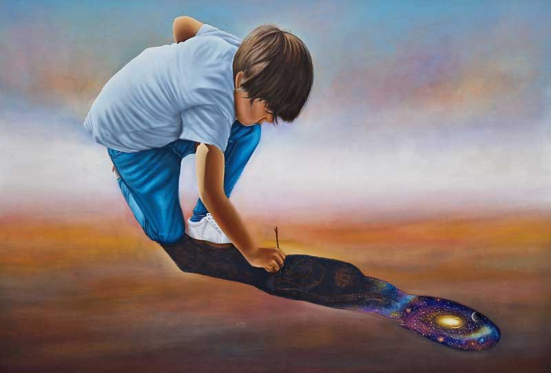

Details
Vernissage: Mittwoch, den 28. Februar 2024
Einführende Worte: Mag. Elisabeth SCHAFFELHOFER-GARCIA MARQUEZ (Koordinatorin des Netzwerks Kinderrechte)
Die Ausstellung war bis Mitte Mai 2024 zu besuchen.
GUSTAVO JUAREZ

Vernissage: Mittwoch, den 28. Februar 2024
Einführende Worte: Mag. Elisabeth SCHAFFELHOFER-GARCIA MARQUEZ (Koordinatorin des Netzwerks Kinderrechte)
Die Ausstellung war bis Mitte Mai 2024 zu besuchen.